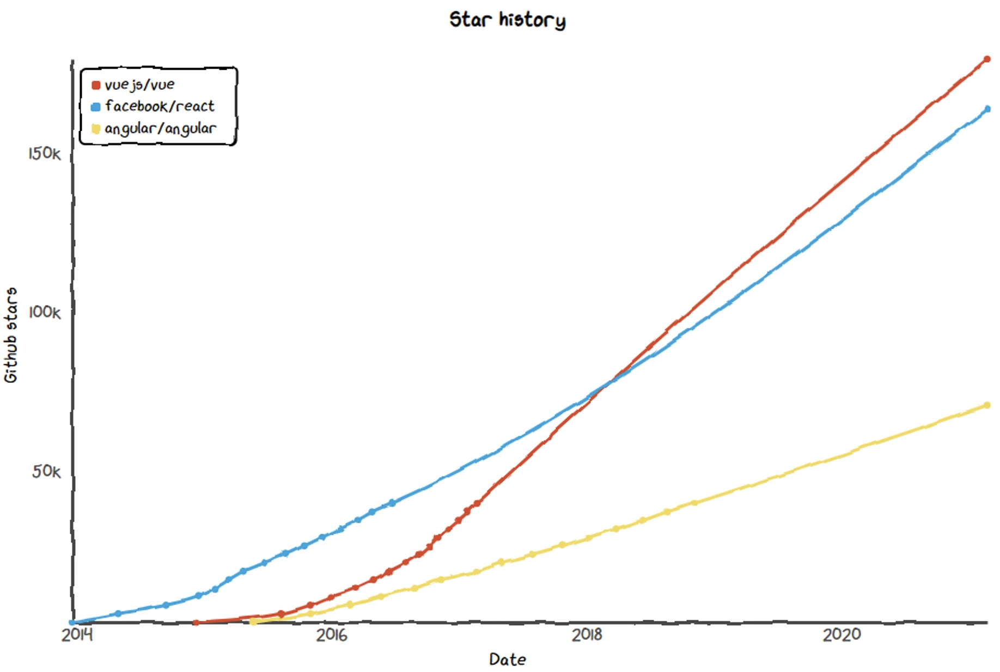

Introduction
QANplatform is looking for developers contributing to developing the backend of a novel, openly accessible and truly free blockchain explorer called Librescan.
There is an eager need for a non-centralized, easily self-hostable & user friendly explorer, since while (most) blockchains are properly decentralized, 99% of users interact with them using completely centralized UIs.
The most often used type of such an evil UI is the block explorer itself.
Main issue is going 100% against blockchains' decentralization principles, as users are effectively associating all their valuable information (their wallet addresses, balances, owned token addresses etc.) with their IP addresses as soon as they make a lookup for them through such centralized explorers.
The goal is to give the blockchain community an easily self hostable solution making the UI part just as much decentralized as blockchains themselves are.
As a result data meant to kept private stays private indeed.
LibreScan needs you!
LibreScan needs talented people from the wonderful crypto community to build a truly robust service the masses can use with confidence.
We compiled some sample tasks to see what kind of roles need to be filled.
Enroll
If you see yourself fit for any of the roles do not hesitate to join the movement!
Click here to enroll as a contributor.
What needs to be done?
The following sections will give a brief overview what kind of talent the project needs:
Read up and see how you could fit!
VUEzards
First off LibreScan needs a user-friendly, intuitive and familiar web based frontend. Lowering the entry barrier for blockchain & cryptocurrency users is a key mission of LibreScan, and doing that starts with a UI which is as easy as it gets.
Rule of thumb is that anything that needs a user-manual to be read is not worth using for the consumer!
Choice of framework
The frontend framework of choice is Vue3.
There are various reasons why Vue3 ended up as the winner here as follows:
Masses can read & understand it
If you know HTML + JS + CSS chances are you will have no trouble understanding Vue code. React & Angular are way more intrusive and use much more exotic, custom structuring & syntax.
As with everything related to Blockchain, transparency is key so the more people can comfortably read it, the better.
Flatter learning curve
Again, same rule applies. Vue has a much flatter learning curve compared to React & Angular. We want to allow as many people to contribute as possible, so one plus point for Vue here as well.
Same philosophy
Vue is a truly community driven framework, whereas React & Angular are backed by Facebook & Google respectively. Many developers appreciate tools that are not backed by tech giants, and this is definitely true for the crypto community.
Popularity, market share
Philosophy is nice but when building such an important piece of an ecosystem as LibreScan, one needs to watch out for real-world trends. We did, and Vue is definitely gaining traction:

Sure GitHub stars are not a de-facto measurement, but it clearly projects tendency. The community growth confirms this as well!
API scaffolders
After inspecting data retrievable on the most popular block explorer's endpoints, a Mock API should be designed to return static data for frontend integration
Endpoints to be inspected:
-
Listing entities
- List transactions
- List blocks
- List all token transfers
- List specific token transfers - Note individual tabs: Transactions & Holders
-
Inspecting a particular entity
- Inspect transaction
- Inspect block
- Inspect token transfer
- Inspect EOA - Note individual tabs: Transactions & ERC-20 Token Txns
- Inspect contract - Note individual tab: Contract
Choice of language
LibreScan goes with JavaScript for its API component. The reasons are as follows:
JavaScript is still the most popular language
Since the API component reads from the Database and can restructure it in endless possible ways to be consumed by the frontend, it was crucial to pick a widely used language so we can have many contributors.
Performance
Python was another option considered here for above reasons, but it is still less popular and WAY less performant than NodeJS. If you want to see the actual numbers, check the popular Benchmark game by Debian.
While there are way more performant solutions than NodeJS (Go, Rust, C ...) they have way smaller communities (in descending order).
Since the heavy lifting will be done by the scraper module anyway, NodeJS is a sane choice for the API component as it has to handle a very limited workflow.
DB designers
Librescan stack will utilize a PostgreSQL database to store blockchain data in the most storage efficient way without compromising on lookup speeds.
It must be able to perform well even on a Raspberry Pi 4 with two attached SSD drives.
The goal is to turn the following YAML draft into PostgreSQL table creation statements:
ids:
id: bigserial
idx: bytea # 16 bytes, indexed, used for lookup
remainder: bytea # remainder of binary data
type: smallint # 0=eoa 1=contract 2=txhash 3=blockhash
nicks:
id: bigint # foreign key id@ids
nick: string # nickname of the particular id
type: smallint # indicates nickname type
erc20tokens:
id: bigint # foreign key id@ids
name: string # token name
symbol: string # token symbol
decimals: smallint # how many decimals the token has
supply: bigint # divided by decimals
blocks:
id: bigint # foreign key id@ids, the blockhash
height: int # block height in the chain
created_at: int # unix ts
txs:
txhash: bigint # foreign key id@ids, the txhash
block: int # block height, foreign key height@blocks
value: bigint # in gwei
from_id: bigint # foreign key id@ids
to_id: bigint # foreign key id@ids
gas_limit: bigint
gas_price: bigint
method_id: int? # 4 bytes
params: bytea? # not contract deployment, not erc20 tx
ethtxs: # if data == 0x tx gets inserted
txhash: bigint # foreign key id@ids
from_id: bigint # foreign key id@ids
to_id: bigint # foreign key id@ids
value: bigint # in gwei
erc20txs: # if first four bytes indicate transfer signature tx gets inserted
txhash: bigint # foreign key id@ids
token_id: bigint # foreign key id@ids
from_id: bigint # foreign key id@ids
to_id: bigint # foreign key id@ids
value: bigint # divided by decimals
contracts:
txhash: bigint # foreign key id@ids
address_id: bigint # contract address, foreign key id@ids
deployer_id: bigint # deployer address, foreign key id@ids
bytecode: bytea # contract bytecode
stats:
address_id: bigint # foreign key id@ids
token_id: bigint # foreign key id@ids, or 0 for eth transfers
balance: bigint # divided by decimals / gwei
first_in: int # unix ts
first_out: int # unix ts
last_in: int # unix ts
last_out: int # unix ts
Constructive comments to the structure are welcome as well.
Choice of engine
PostgreSQL was chosen for several reasons as follows:
Performance & Scaling
PostgreSQL is usually the choice for open-source projects of this magnitude. The community around it is also preferable in our humble opinion.
If you’re developing an application with a database back end, which of the two should you use? Consider PostgreSQL for any application that might grow to enterprise scope, with complex queries and frequent write operations. If you’re new to the world of databases and don’t expect your application to scale up, or you’re looking for a quick tool for prototyping, then consider MySQL.
Philosopy
Again, the Philisophy of the technologies used is another important factor as we've seen when we described the previous modules. Consider the following:
One of the original developers of Ingres returned to Berkeley in 1985 (after founding a company that commercialized Ingres) to develop a successor to Ingres that he named Postgres. The name was officially changed to PostgreSQL to take advantage of the reference to Structured Query Language, but the project uses both names. The first production release, PostgreSQL 6.0, came out in 1997. Now at version 14 (beta), Postgres is developed by an “unincorporated association of volunteers and companies who share code under the PostgreSQL Licence,” according to a project FAQ.
Unlike PostgreSQL, MySQL has always been under corporate control. Original developer MySQL AB was acquired by Sun Microsystems in 2008, shortly before Sun was itself acquired by Oracle in 2010.
Source from fivetran.com
Scraper developers
After the DB has been constructed and the API is ready to serve data from it to the frontend, we need to start filling the DB with real world data scraped off a real blockchain.
The simple hierarchy is that each block contains N transactions. Transactions can be of various kinds, respectively:
Regular ETH transaction
This is the simplest form of a transaction, where the particular chain's native currency (ETH on Ethereum, BNB on Binance Smart Chain, etc.) gets transferred from address 0xA to address 0xB.
They can be easily recognized by the scraper as all these transactions have an empty data field (0x).
Contract deployment transaction
Contract deployment transactions can be also detected without much effort, since these are the only transactions where there is no recipient defined.
Any transaction where there is no recipient and the data field is not empty is definitely a contract deployment transaction.
We need to further differentiate token contract and other custom contract deployments:
- ERC20 Token contract
Such a contract implements the EIP-20 Token Standard Inferface and has the specified method IDs present in the contract bytecode.
- Other custom contract
Anything which is not an ERC20 token contract falls into this category, meaning if at least ONE of the method signatures present in EIP20 is not defined in the contract then it falls into this category.
Token transfer transaction
These kind of transactions contain information about a token transaction in their either their data field or emit a Transfer(address, address, uint256) type of event during execution
- Direct transfers
These kinds of transfers are easily recognizable from the data field's first four bytes being 0xa9059cbb indicating the transfer(address, uint256) function signature.
Two 32byte parameters will follow, the first being trimmed to 20bytes which indicates the recipient of the transfer, and the other value meaning the amount of tokens transferred in a HEX encoded form.
- Internal transfers
When some other kind of transaction (e.g. DEX trade) moves tokens, they will event a single or multiple Transfer(address, address, uint256) signature events. These events should be parsed if they are emitted and inserted into the DB.
Choice of language
The scraper module of LibreScan is implemented in Go.
Ecosystem
Go is a quite popular programming language in the blockchain & crypto ecosystem, as major players build their official engines with it. Just to name a few:
Language purpose
While it is true that Rust is more performant than Go, but the Go language was especially designed for concurrent network based applications
Learning curve
Again, the learning curve (=entry barrier) was an important factor as well when making the decision. Rust has a way steeper learning curve and has unquestionably harder to understand sources. Same philosophy applies that the more people are able to read how stuff works, the better.
Considering benefits & tradeoffs
Comparing all the above benefits of Go with the performance tradeoff against Rust, the choice was a no-brainer. If you love Go & crypto you should really join the development to build something truly magnificent for this space!
DevOps magicians
The core of efficiency and transparency lies in proper structuring of microservices orchestrated to provide the backbone of Librescan.
The default setup looks like the following:
version: '3.7'
services:
# THE USER FACING WEBSITE
web:
image: librescan/web:v0.0.1
networks:
- frontend
# SERVES INCOMING API REQUESTS FROM THE FRONTEND
api:
image: librescan/api:v0.0.1
volumes:
- config:/config # PERMANENT CONFIG M
networks:
- frontend # EXPOSE AT /api URL VIA INGRESS
- backend # MUST ACCESS DB READ REPLICA
# SERVES AS A READ-ONLY REPLICA FOR API REQUESTS
db-read:
image: librescan/db:v0.0.1
command: read # INSTRUCTS CONTAINER TO LAUNCH IN READ-ONLY REPLICA MODE
volumes:
- db-read:/var/lib/pgsql/data # MOUNT READ-HEAVY VOLUME
networks:
- backend # MUST ACCESS WRITABLE DB TO REPLICATE FROM
# RECEIVES STRUCTURED DATA FROM SCRAPER, OFFERS REPLICATION
db-write:
image: librescan/db:v0.0.1
command: write # INSTRUCTS CONTAINER TO LAUNCH IN WRITABLE MODE
volumes:
- db-write:/var/lib/pgsql/data # MOUNT WRITE-HEAVY VOLUME
networks:
- backend # MUST BE ACCESSIBLE FOR SCRAPER
# SCRAPES DATA OFF ETH RPC, STRUCTURES IT AND WRITES IT TO DB
scraper:
image: librescan/scraper:v0.0.1
environment:
RPC: https://example.com/rpc # ETH COMPATIBLE RPC ENDPOINT
networks:
- backend # MUST ACCESS WRITABLE DB TO WRITE TO
networks:
# THE FRONTEND NETWORK IS CONNECTED TO INGRESS CTL
frontend:
driver: bridge
# BACKEND NETWORK IS FOR BACKEND SVC ONLY
backend:
driver: bridge
volumes:
config: # VOLUME FOR PERSISTENT CONFIGURATION
db-read: # RESIDES ON SEPARATE READ-HEAVY TUNED DRIVE
db-write: # RESIDES ON SEPARATE WRITE-HEAVY TUNED DRIVE
We are looking for DevOps wizards responsible for fine-tuning the microservice structure.
The first requirement is to translate above docker-compose manifest file into various Kubernetes manifests (deployments, services, ingresses, PV & PVCs, etc.)
Choice of orchestrator(s)
We have to support everything here really. This is not a subjective question since this part of the application is vastly different from other components. The other modules can be chosen by us developers, but we surely must not force users to adopt to new container orchestration systems.
Deployment targets to be supported
Infra engineers
Managing underlying infrastructure without inflicting direct user pain is a hard task to tackle. For this very reason LibreScan makes this complication vanish as well by automating infrastructure creation by declarative means.
Goal
Support as many possible infrastructure providers as possible. Of course let's start with the most common ones like:
- Amazon AWS
- Google Cloud Platform
- Microsoft Azure
And also aim for the popular & trending choices like:
- Linode
- Hetzner
- Scaleway
See whether this is something for you
If you can & enjoy building a Kubernetes cluster from scratch on bare metal using Terraform with a zero-config approach this is definitely your dream.
Poseidon Typhoon is the amazing work of Dalton Hubble which walks you through creating such a cluster powered by Fedora CoreOS. See whether you can make it happen and whether you enjoy the process!
Choice of tooling
The choice here was straightforward, Terraform really shines in this field. It supports the vast majority of any possible deployment target as documented here.